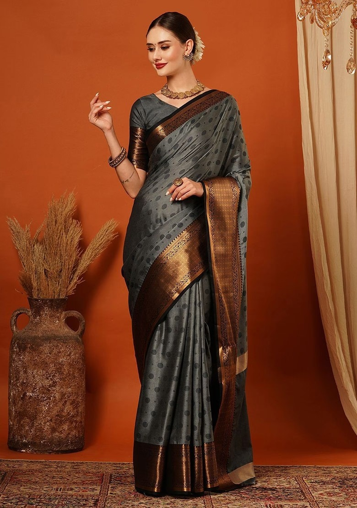
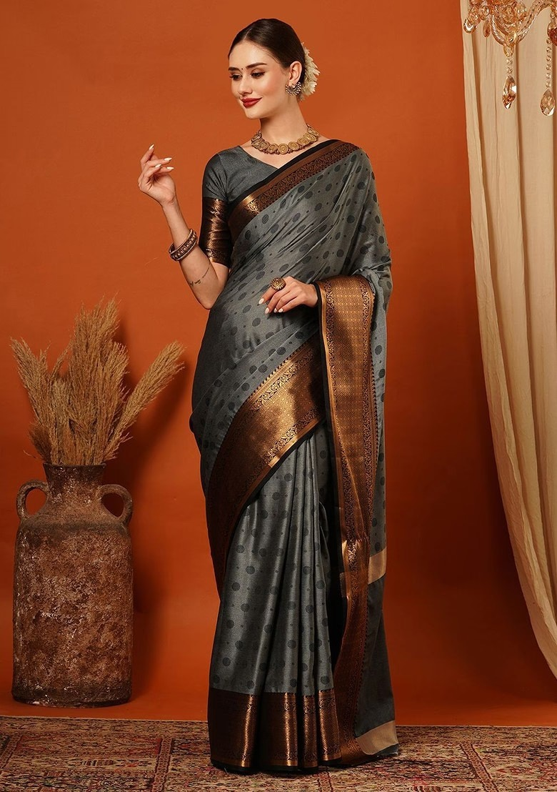
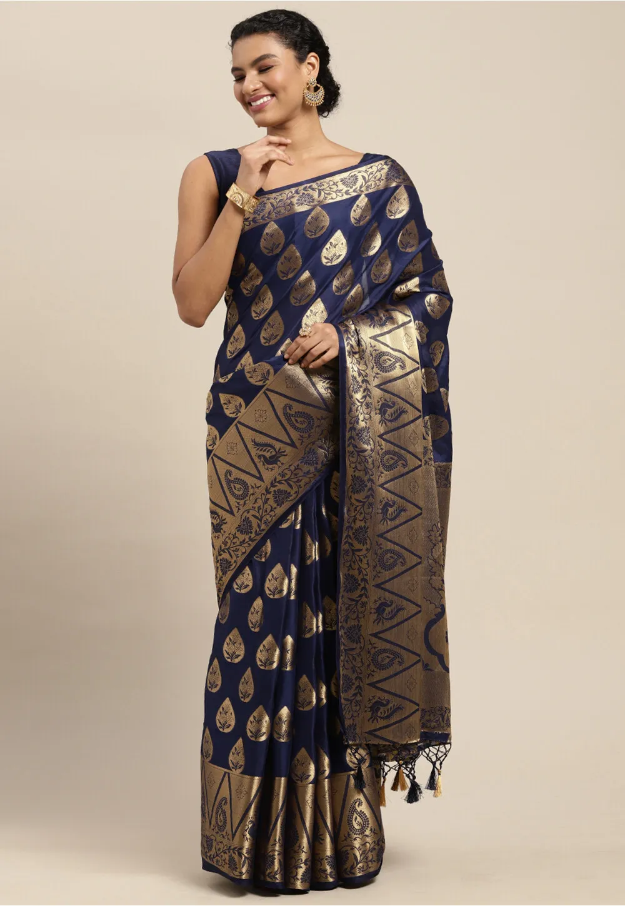
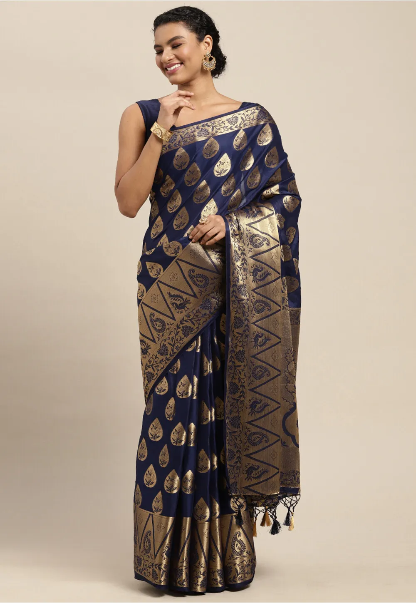

MYSORE SAREE
- Karnataka
 

 

The Mysore silk saree is another iconic silk saree from Karnataka, known for its subtle elegance. Woven from pure silk, these sarees are lightweight and often feature a minimalistic design with a rich golden border.
The soft texture and vibrant colors make the Mysore silk sarees perfect for both formal and festive occasions. This saree is renowned for its durability, sheen, and the use of natural dyes, which gives it a timeless appeal.